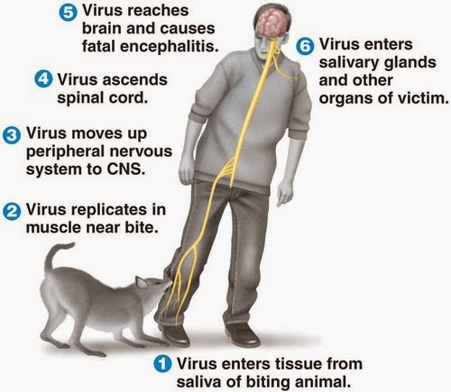

Rabies
- Rabies is a viral infection that mainly spreads through a bite from an infected animal. It is an RNA virus of the rhabdovirus family.
- It enters the peripheral nervous system (PNS) directly and migrates to the brain.
- It replicates within muscle tissue, where it is safe from the host's immune system. From here, it enters the nervous system through the neuromuscular junctions.
- Once inside the nervous system, the virus produces acute inflammation of the brain. Coma and death soon follow.
- Without early treatment, it is usually fatal.

Transmission
Rabies is most common in countries where stray dogs are present in large numbers, especially in Asia and Africa.It is passed on through saliva. Rabies can develop if a person receives a bite from an infected animal, or if saliva from an infected animal gets into an open wound or through a mucous membrane, such as the eyes or mouth.
It cannot pass through unbroken skin. In the U.S., raccoons, coyotes, bats, skunks, and foxes are the animals most likely to spread the virus. Bats carrying rabies have been found in all 48 states that border with each other.
What are the symptoms of Rabies?
- Symptoms can occur as fast as within the first week of the infection.
- The early symptoms of rabies are very generalized and include weakness, fever, and headaches. Without a history of a potential exposure to a rabid animal, these symptoms would not raise the suspicion of rabies as they are very similar to the common flu or other viral syndromes.
The disease can then take two forms:
- With paralytic rabies (approximately 20% of cases), the patient's muscles slowly become paralyzed (usually starting at the site of the bite). This is the less common form and ends in coma and death.
- With furious rabies (about 80% of cases), the patient exhibits the classic symptoms of rabies, such as:
- Anxiety and confusion (The patient is often overly active.);
- Encephalitis, causing hallucinations, confusion, and coma;
- Hypersalivation;
- Hydrophobia (fear and avoidance of water);
- Difficulty swallowing.
How to Prevent Rabies?
Rabies is a preventable disease. There are some simple measures you can take to help keep you from catching rabies:
Get a rabies vaccination before traveling to developing countries, working closely with animals, or working in a lab handling the rabies virus.
Vaccinate your pets.
Keep your pets from roaming outside.
Report stray animals to animal control.
Avoid contact with wild animals.
Prevent bats from entering living spaces or other structures near your home.